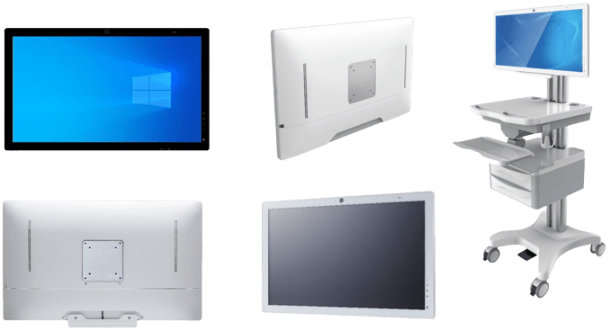

預計2022年醫療平板電腦市場將持續增長！
05/26/2022 / 消息
複合成長率 4.6% | 醫療平板電腦
根據2022年3月發布的《360研究報告》，“醫療平板電腦市場”規模預計將從2020年的2.921億美元增長到2026年的4.016億美元。
醫療平板電腦是由觸摸屏和必要的醫療級I/O接口組成的專用計算機。它可以安裝在計算機推車上，安裝在手術室的手臂上，以幫助提高護理質量和醫院效率。
北美是最大的使用地區，2016年市場份額接近35%。其次是歐洲，市場份額為33%。
醫療平板電腦市場分為15英寸以下、15-17英寸、17-21英寸、21-24英寸等。隨著24英寸液晶顯示器的價格變得更具競爭力，它可能在不久的將來成為醫療平板電腦的主要尺寸。
HIMSS展會
HIMSS 展會（HIMSS 全球健康會議暨展覽會）是最重要的健康活動之一， 全球健康生態系統的專業人士參加這一有影響力的會議和貿易，以獲得改善人類健康和福祉所需的信息和解決方案。 該展會於三月份在陽光明媚的美國奧蘭多舉行，我們很榮幸在美國合作夥伴展位上 展示了我們最新的醫療級平板電腦“OmniMPC-241”，並獲得了許多參觀者的良好反響。
OmniMPC-241 | 醫療平板電腦
OmniMPC-241
OmniMPC-241 對這些訪客的重要功能包括
✅最新Intel® 第 11 代 Tiger Lake 處理器
✅電容式高清觸摸螢幕
✅無風扇，超薄且輕量
✅可選備用電池組
✅遠程醫療功能，帶麥克風、揚聲器和相機
✅有保證的長生命週期支持